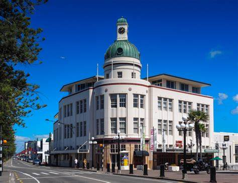

Napier
17 Walks
Difficulty:
Easy - Intermediate - Hard
3 Exercise areas
7 Parks
17 Walks
Difficulty:
Easy - Intermediate - Hard
3 Exercise areas
7 Parks
8 Walks
Difficulty:
Easy - Intermediate
1 Exercise areas
4 Parks
32 Walks
Difficulty:
Easy - Intermediate - Hard
3 Exercise areas
9 Parks